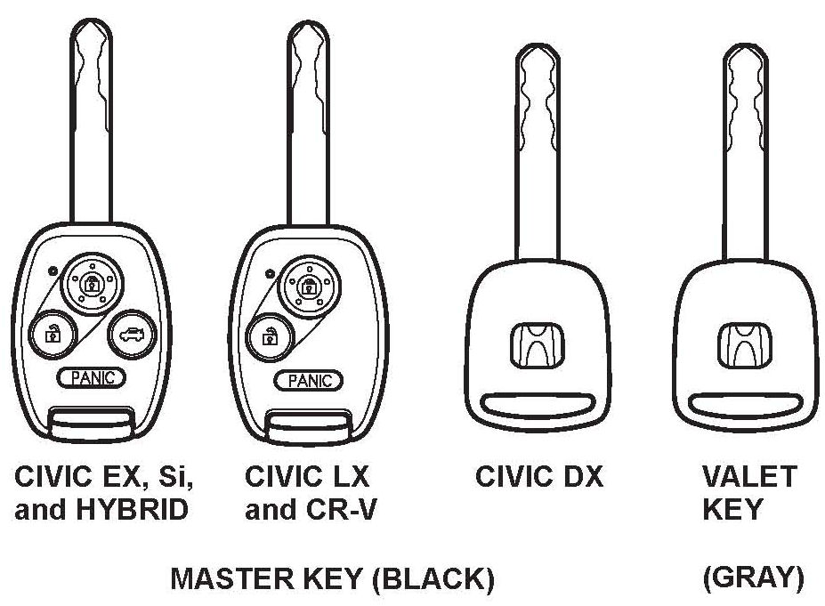
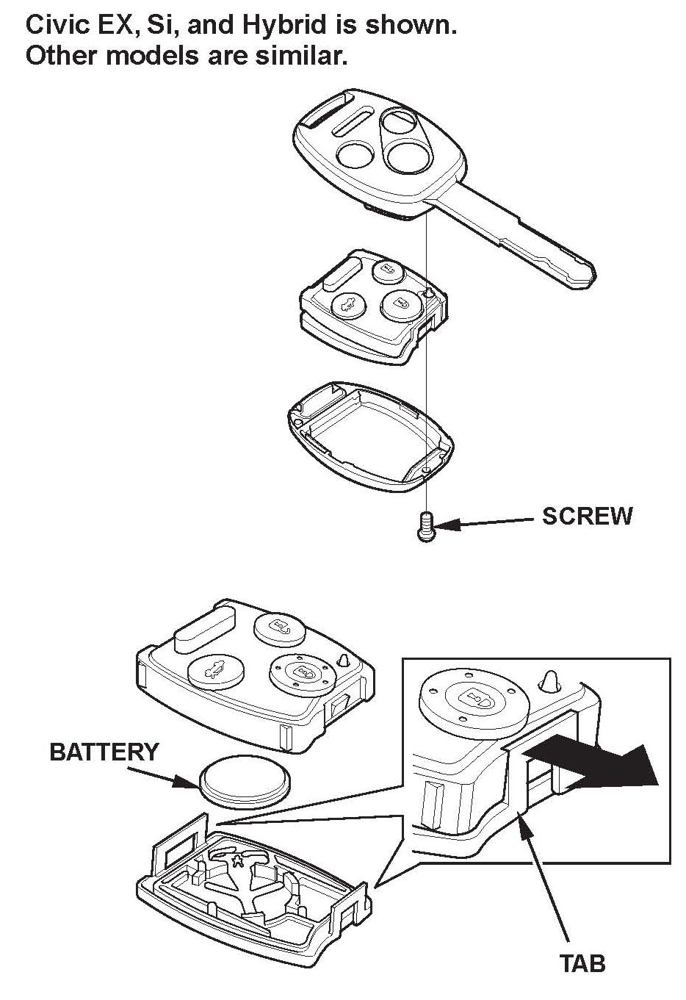

Immobilizer Transponder Keys and Keyless Transmitter Descriptions
IMMOBILIZER TRANSPONDER KEYS AND KEYLESS TRANSMITTER DESCRIPTIONS
Some models come with three immobilizer transponder keys (two master keys [black grip] and one valet key [gray grip]).
Each master key with built-in transmitter and valet key has a transponder that uses a rolling-type code (activated by the immobilizer-keyless control unit) when you insert the key into the ignition switch and turn the switch to ON (II). The immobilizer system uses this code to determine whether to start the engine.
The Civic DX comes with two master keys and one valet key; the immobilizer transponder is built into the keys.
Different from previous systems, master keys with a keyless transmitter have the transponder built into the transmitter. A transmitter may be replaced independently from the key. When the keyless transmitter or the complete key is replaced, or an additional key is added, you must use the HDS to rewrite the immobilizer-keyless control unit. See ADDING OR DELETING KEYS OR KEYLESS TRANSMITTERS. This procedure also programs the vehicle to work with the keyless transmitter
When you need to cut a new or duplicate key, use the appropriate tool from the Honda Tool and Equipment Program. Call or on the Interactive Network (iN), click on Service > Quick Links > Tool and Equipment Program.
Because of the rolling code characteristics of the Type 6 immobilizer system, you cannot use the Ilco Immobilizer Key Code Duplicator or Ilco programmable (T5) key blanks with this system.

The keys for the Civic DX do not contain batteries or other serviceable parts. The master keys for all other models have a battery-operated remote transmitter built into the grip that lets you lock and unlock the vehicle. Civic EX, Si, and Hybrid models also have a trunk release. The batteries in these keys are for keyless functions only. The immobilizer function of the key does not require a battery.